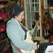
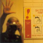
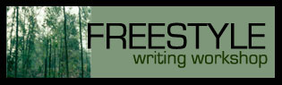

We are proud to announce the six writers who won The QUEST, an experimental literary workshop tournament that ran during October 2003. One hundred and fourteen writers participated in The Quest and we'd like to thank them all for their amazing work and great spirit. The six featured writers are:
elz
Elizabeth Barrickman, Ohio, USA
Elizabeth grew up in a steeltown which she romanticizes--now that she's long gone. She studied drawing/sculpture and somehow manages to hold down a job in Ohio that allows her to use a bit of both. She collects epitaphs and changes her own periodically. Currently, she's running with "HERE LIES ELIZABETH. SHE ALWAYS WANTED MORE".
|
beatvibe
Marc Weber, Minneapolis, USA
Marc is a surprisingly lifelike emulation of a writer. He is indigenous to the frozen tundra of Minneapolis, where he earned a degree in Mathematics from Augsburg College. Although currently employed as an application developer in the financial services industry, Marc has been published in 'Minnesota Law & Politics' and maintains a web showcase of his fictional writing at www.beatvibe.com. Marc has been in development for over 39 years, and is expected to retail for approximately $97.
|
kairo
Kate Harshbarger, Iowa, USA
Among quiet cornfields of Iowa’s changing seasons Kate Harshbarger teaches, writes and tries it all. Currently Kate is teaching high school English at a small southeastern school and living in Iowa City, a small city whose diversity helps inspire her work. Kate’s poetry focuses on the themes of love, seduction, passion and rare human connections. She is the author of a self-published chapbook entitled, “Love’s Red” as well as a published member of The Deep Cleveland Junk Mail Oracle. Kate earned her Bachelor’s degree in English at the University of Northern Iowa and is currently attending The University of Iowa seeking a masters degree in School Counseling.
|
NinePages
Sean M. Hogan, Pennsylvania, USA
"I live in southern Pennsylvania with my two sons, my girlfriend Julie Horne, who is also a writer, and our two dogs. Been writing for as long as I can remember. One of my first memories is getting the stink eye for writing a story about a Santa Claus who dies in someone’s chimney and starts to stink up the place. I think I was about 10 at the time. Went to college in Buffalo, NY and learned all about the writers i didnt ever want to be. Toyed with journalism and advertising, but decided journalism is too misleading, and soon realized that advertising didn't want me. I’ve written several short stories and one novel, which I’m shopping to agents. I’m a frequent lurker slash poster on Litkicks, and I’m excited about being included among the better writers in the place."
|

Hejira
Rachel Summer Tupelo, Virginia, USA
Rachel has been writing stories and journaling since she was six. Her previous works include two self-published novellas from third and fifth grade: The Day Mushi and I Turned Eight, a tale of a girl with a hungry but charming gift-eating pet elephant, and What Do You Do When No One Cares, a heart-wrenching saga of a child who runs away from home and flees across the country to find peace with foster parents in California; as well as poetry in several school literary magazines. Well, two. Summer lives in Virginia with eighty-five adults and fifteen children on a funny, funny farm, where, when she isn't writing, she can be found making hammocks, playing guitar and singing, eating tofu, and berating herself for not doing laundry. The LitKicks anthology will be her first published work attached to an ISBN. She's currently at work on her first novel.
|

Kreddible
Trout
Kreddible Trout, Halifax, Canada
The words ‘Kreddible Trout’ were hatched in a gibberish poem about a being who simply lived as one with all. The moniker was adopted out of a desire for artistic anonymity moments before his first poetry reading on May 3, 2000. The persona has thrived on a balanced diet of crypticism, optimism and brazen sobriety. Born in Montreal under another name in October 1971, his travels have brought him to almost every town in Canada in every variety of vehicle and vessel. A couple of years ago at a poetry reading in Vancouver he struck gold and fell in big love with the woman who recently became his wife. They now reside happily in Halifax with their coffee pot ‘Perky’.
|
There were also five QUEST honorable mentions chosen: Ida Wright, frontal-abstraction, Lightning Rod, willtupper and agresik. You can read the work by the six winners, the five honorable mentions and a few other QUEST writers on this page: Morning Talk Belief: Selections From The QUEST.
We are now finalizing plans for the Summer 2004 publication of a LitKicks anthology that will feature the writings above. Stay tuned for more news about this book!
|

|
|
|
|
The Freestyle Writing
Workshop is an engaging online experience for writers, poets,
playwrights and essayists wishing to improve their skills and receive
thoughtful feedback. The first session will begin Monday, November 17,
2003 and end on Wednesday, December 31, 2003.
|
|
The
QUEST is a writing workshop and tournament produced by LitKicks.com. There
is an entry fee of $20, and six winners are chosen to be featured in an
upcoming LitKicks anthology and on the LitKicks.com website. The signup
period for the October 2003 QUEST is now over.
|
|